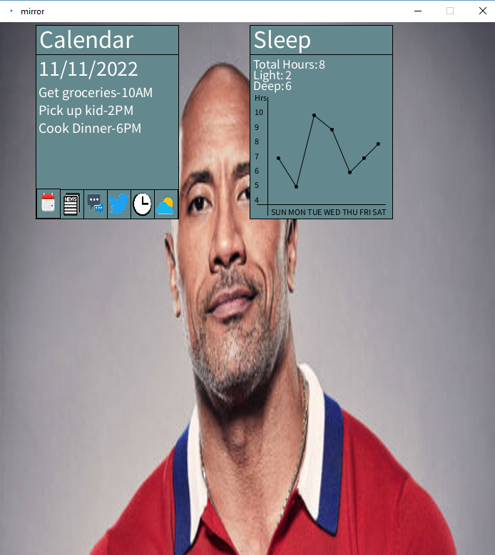

I chose to have two windows to show health and general information. To save space, the general window has tabs that the users can click to view whatever they wish. Tabs are emphasized when selected.
The implementation is very similar to the sketches. Users can alternate between tabs, and they can reposition windows by grabbing the top bar of either window.
